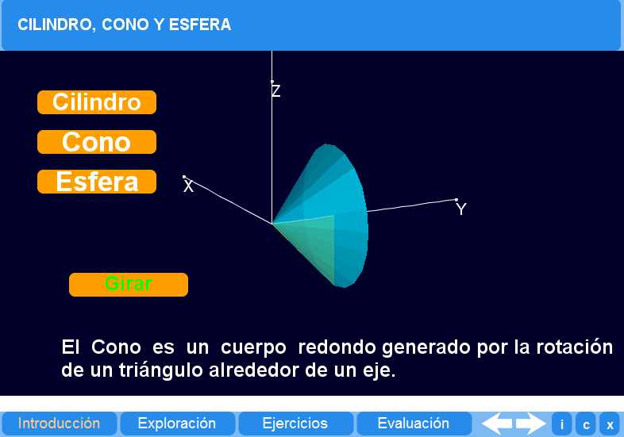
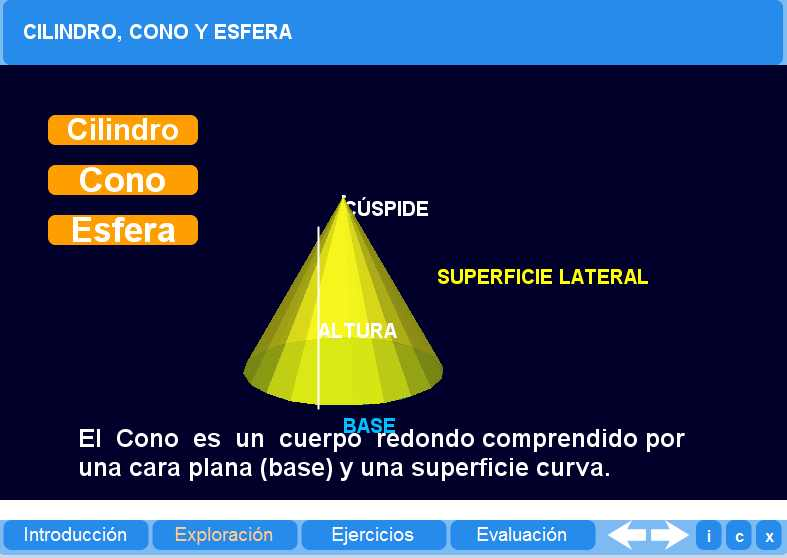
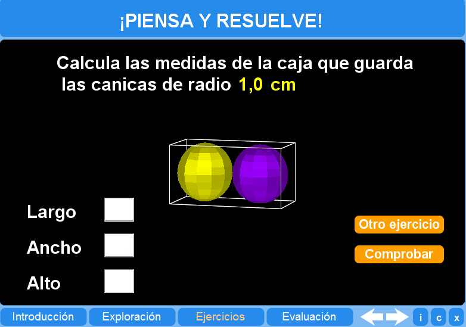
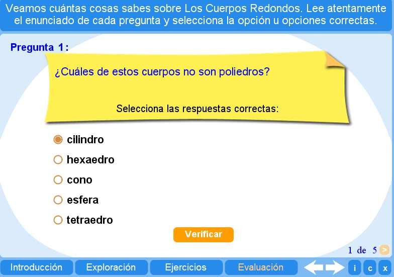

Objetivo
Ofrecer actividades que permitan al alumno comprender cómo se construyen el cilindro, el cono y la esfera, además de algunas de sus propiedades..
Instrucciones generales
Se puede navegar entre los apartados con el menú de la parte inferior. Este menú aparece a lo largo de todo el interactivo y conserva su funcionalidad.
También se puede navegar por las escenas por medio de las flechas de navegación que aparecen en el lado inferior derecho del objeto de aprendizaje. Dentro de los apartados Exploración y Ejercicios es necesario utilizar estas flechas para acceder a las escenas sucesivas de dichos apartados.

En la parte inferior derecha del objeto de aprendizaje interactivo se encuentran los siguientes botones:
 |
Muestra la documentación del objeto de aprendizaje. |
| Despliega los créditos correspondientes. | |
 |
Cierra la aplicación. |
Contenidos
Introducción
Actividad que permite observar cómo se forma el cilindro, el cono y la esfera.

Exploración
Actividad que muestra algunas propiedades del cilindro, del cono y de la esfera..

Ejercicio
El alumno puede practicar con ejercicios en los cuales se deben considerar el diámetro de la esfera.

Evaluación
El alumno puede responder a varias preguntas planteadas, aplicando los conceptos aprendidos en los apartados anteriores.

| Los materiales aquí presentados utilizan el applet Descartes Web 2.0. | |
 |
Los contenidos de esta unidad didáctica están bajo una licencia de Creative Commons. |